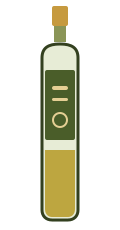
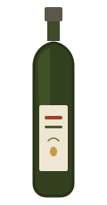
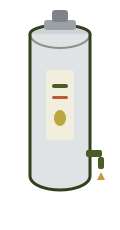

The New York reality: you'd be a curator, not a grower
Start here, because it reframes the whole idea: New York grows essentially no olives. The climate is far too cold — commercial olive growing here doesn't exist; a potted tree wintered indoors is a novelty, not a crop. So a "New York olive oil business" is a story about curation and commerce, not agriculture 1.
In practice that means nearly every olive-oil business in the state is a tasting-room retailer: it buys bulk extra-virgin oil and balsamic vinegar sourced globally, stores them in stainless-steel fusti casks, lets you sample at a tap, and sells the oil refilled by the bottle. The savvy ones "follow the crush" — buying from the Northern Hemisphere in winter and the Southern Hemisphere (Chile, Australia, South Africa) in summer — so the oil on the shelf is always close to fresh-pressed. A common wholesale supplier behind many of these shops is California's Veronica Foods 1.
New York's small sellers
Seven confirmed, currently-active New York operations — proof the demand is already here and being served by families much like yours:
Saratoga Olive Oil Company
Saratoga Springs (flagship, 484 Broadway) + Lake Placid, NY + Burlington, VT. Fusti tasting bar, refill-by-the-bottle, and a big online/DTC arm. Family-run (the Braidwoods), founded 2011 by former pharma-research consultants who pivoted to a fresh-EVOO lifestyle story; they "follow the crush." The state's strongest, most-expanded example — a genuine role model 2.
Oliva! Gourmet Olive Oils & Vinegars
Albany (Stuyvesant Plaza) + Rhinebeck, NY + Lenox, MA. Family-owned tasting room importing oils/vinegars in bulk directly to the stores (no distributor), 50+ flavors from airtight Italian fusti, bottled to order. Spans the Capital Region and Hudson Valley 3.
F. Oliver's (EVO OH!)
Finger Lakes: Canandaigua (original), Rochester, Ithaca. Experiential taste-before-you-buy shop; founded 2010 by Penelope Pankow (a Cornell Hotel School grad who found the concept in northern Michigan). Sources via Veronica Foods and even carries some product tied to Cornell's Geneva ag station 4.
The Blue Olive
Pawling & Cold Spring, NY (Hudson Valley). Family tasting bar with 50+ EVOOs and balsamics plus pasta, salts, olive-oil soaps and pottery. Founded 2014 by John Canevari, a certified olive oil sommelier who runs "Olive Oil 101" classes at local libraries and schools 5.
Scarborough Fare
Beacon, NY. "Refill your own bottle at the tap," alongside a curated pantry — sea salts, spices, organic pasta, honey, fresh mozzarella, Italian meats. Founded 2011 and run by a mother-and-son team; a close analog to the mom-and-pop model you're picturing 6.
The House of Olives
Buffalo, NY (Hertel Ave). A family-owned EVOO / balsamic / salt / spice tasting shop, opened by an owner who ran an olive-oil business in Charlotte, NC before bringing the concept to Western New York 7.
Plus Essex Olive & Spice on Manhattan's Lower East Side — an importer/specialty-retail storefront (imported EVOO, aged Modena balsamics, olives, spices) representing the NYC-metro flavor of the trade 8.

Three models, proven nationwide
Zoom out to the whole country and the small end of the business sorts into three repeatable shapes. Only one of them needs a farm — and it's not the one that fits New York.
Grower-mills & agritourism
Own the grove and the mill; sell estate oil at a premium and stack on tours, tastings, a bistro, events. Land + story = moat. Not available to a NY startup — but the agritourism playbook still teaches you how to sell experience.
Tasting-room shops
No grove needed. Buy wholesale, dispense from fusti, sell refills + gourmet add-ons. Low capital, high margin, location-dependent. The most replicable mom-and-pop model — and the one that fits NY.
DTC micro-brands
Tiny volumes, strong design and narrative, sold online by subscription or through specialty grocers. Competes on freshness, transparency, and cultural cachet instead of shelf space.
Model A — grower-mills & agritourism (learn the experience playbook)
| Business | Where | What makes it instructive |
|---|---|---|
| Queen Creek Olive Mill | Arizona | ~100-acre farm billed as the state's only working mill; stacks bottle sales, paid tours, an eatery, a coffee roastery, and events into one destination. Textbook revenue-stacking and "only in the state" positioning 10. |
| Texas Hill Country Olive Co. | Texas | Family estate (founded 2008) with a Tuscan-style mill house, tasting room, bistro, and tours — proof terroir credibility can be built outside California (awards claims are self-reported) 11. |
| Durant Olive Mill | Oregon | Pairs an olive mill with a winery, lavender fields, and a nursery on one property — the diversified cool-climate agritourism model 12. |
| Chaffin Family Orchards | California | Century-old farm selling estate EVOO alongside grass-fed meat, fruit, and eggs — olive oil as one line in a farm-direct catalog, no fancy tasting room required 13. |
| Georgia Olive Farms | Georgia | Grower cooperative that made the first certified EVOO east of the Mississippi — being first in a new region is the brand; even runs a consulting sideline 14. |
Model B — tasting-room shops (the one that fits New York)
This is the replicable heart of the small-seller world, and the trade sources are unusually specific about the economics: a fit-out can start around $20k–$50k for a lean shop (one profitable example runs in just 650 sq ft), while a built-out 1,000 sq ft room runs $100k–$250k. Gross margins on tasting-room/DTC sales are cited at 30–50%+ — and paid tastings and classes carry the fattest margin of all. The named success factors: knowledgeable, warm staff; a tourist- or foodie-heavy location; and lean inventory — stock a few, restock what sells, don't launch with 40 SKUs 15.
EVOO Marketplace
Colorado. Family "sampling room" (2009) with 50+ EVOOs + Modena balsamics and nationwide shipping. Notably consolidated in 2023, closing a location to focus — a healthy right-sizing lesson 16.
We Olive (franchise)
CA-based, incl. Brooklyn, NY. The tasting-room concept packaged as a franchise — a wine bar bolted on for dwell time, all-California COOC-certified oils. A turnkey route if you'd rather buy a system than build one 17.
VomFASS (franchise)
International, US stores. "From the cask" refill franchise (300+ locations) built around a sustainability/refill story and a broad oils-vinegars-spirits range. Note: no NY location as of 2026 18.
Model C — DTC micro-brands (de-commodify the bottle)
Fat Gold
California. Subscription-first micro-maker (founded ~2016): four single-variety 500 ml tins a year for ~$179, tins carrying collectible magnets instead of labels. The clearest "recurring revenue without a storefront" template for a tiny maker 19.
Wonder Valley
California. Husband-and-wife brand (2014) built around one hero EVOO, later extended into olive-oil skincare. They ran a low-pressure retail "testing ground" for years to learn their customer before scaling — a masterclass in patient brand-building 20.
Enzo's Table
California. Fourth-generation family operation that turned competition medals (repeated NYIOOC golds) into its DTC credibility engine, paired with a subscription and a broadened gourmet catalog. Bigger than a true mom-and-pop — an aspirational middle-ground 21.
Bariani Olive Oil
California. A family grower-miller going since ~1991 — stone-wheel milled, unfiltered, organic — competing on old-world method and terroir rather than marketing spend. Proof a small family mill can persist for 30+ years 22.
The upstarts, compared
A wave of design-forward, direct-to-consumer brands has done more to shake up American olive oil in five years than the incumbents did in fifty. It's worth studying them closely — their packaging format and use-case are as much the product as the oil itself.
The packaging archetypes
Squeeze bottle
Cook-vs-finish, playful, everyday. e.g. Graza

Designer glass
Matte/opaque, art label, gifting. e.g. Brightland
Metal tin
Light-proof, collectible, subscription. e.g. Fat Gold

Dark glass
Early-harvest, wellness, classic. e.g. Kosterina

Refill fusti
Taste, refill, come back. the NY shop model
Brand-by-brand
| Brand | Format | Oil origin | The angle | See it |
|---|---|---|---|---|
| Graza Brooklyn, NY · 2021 |
Green plastic squeeze ("Sizzle" / "Drizzle") | Fresh, cook-vs-finish, playful design; ~$240M valuation, 28,000+ stores | site · CNBC | |
| Brightland California · 2018 |
Matte glass, art labels ("Awake" / "Alive"); 2025 squeeze line | Design-led "everyday luxury," anti-rancidity education; ~$15M raised | site · Fast Co. | |
| Fat Gold California · 2016 |
500 ml metal tins, no label — collectible magnets; subscription | Micro-batch, single-variety, "field report" storytelling; bootstrapped | site · Edible E. Bay | |
| Wonder Valley Joshua Tree, CA · 2014 |
Minimalist frosted glass; olive-oil skincare line too | Wellness + culinary crossover, high-polyphenol, desert aesthetic | site · Fashionista | |
| Kosterina NY-based · 2016 |
Dark tinted glass + tins; vinegars, skincare | Early-harvest, high-polyphenol "superfood" story; Marc Lore / Andy Dunn backing | site · Forbes |
Also worth a look: Grove and Vine (subscription single-origin, harvest dates + lab results, rotating US/imported) and Nuvo (NYIOOC-winning California DTC). Details & sources in Resources. Funding and valuation figures are as reported in the press cited; verify before relying on them.
What the small sellers teach you
- The NY-fit model is the tasting room / curator-bottler — you don't need a farm, you need taste and sourcing. Saratoga Olive Oil Co and F. Oliver's are your real peers.
- Sell the experience, not just the bottle. Paid tastings, classes, and tours are the fattest-margin things any of these businesses do.
- Freshness is the pitch. "Follow the crush," date your oil, and you separate yourself from rancid supermarket stock.
- Awards are a credibility engine (Enzo's, NYIOOC) — a small maker's shortcut to being taken seriously.
- Right-size before you scale. Pure Mountain's contraction and EVOO Marketplace's deliberate consolidation say the same thing: durable beats big.
- A franchise is a shortcut with strings (We Olive, VomFASS) — a system you can buy if you'd rather not invent one.
Sources
All links accessed 2026-07-23. Small businesses open, move, and close — verify status before relying on any profile. Award/superlative claims from company sites are self-reported and noted as such.
- On the NY "curator not grower" reality, the fusti/refill model, "following the crush," and Veronica Foods as a common supplier — synthesized from the confirmed NY shop profiles below and Hudson Valley Magazine, 8 Hudson Valley Olive Oil Shops. hvmag.com
- Saratoga Olive Oil Company — About & locations. saratogaoliveoil.com
- Oliva! Gourmet Olive Oils & Vinegars. olivaevoo.com
- F. Oliver's / EVO OH! — folivers.com & Life in the Finger Lakes profile of founder Penelope Pankow. folivers.com
- The Blue Olive — Main Street Magazine profile. mainstreetmag.com
- Scarborough Fare (Beacon, NY). scarboroughfarebeacon.com
- The House of Olives (Buffalo) — Buffalo Rising profile. buffalorising.com
- Essex Olive & Spice (NYC, Lower East Side). essexoliveandspice.com
- Pure Mountain Olive Oil — Westchester Magazine (rise) & Yelp (storefront closures). westchestermagazine.com
- Queen Creek Olive Mill — Olive Oil Times (agritourism) & official site. oliveoiltimes.com
- Texas Hill Country Olive Co. — Tour Texas & official site. tourtexas.com
- Durant Olive Mill at Red Ridge Farms (Oregon). durantoregon.com
- Chaffin Family Orchards (Oroville, CA). chaffinfamilyorchards.com
- Georgia Olive Farms (Lakeland, GA). georgiaolivefarms.com
- Tasting-room economics — The Olive Oil Source, Opening an Olive Oil Tasting Bar or Store, & FinModelsLab startup costs (illustrative aggregator ranges). oliveoilsource.com
- EVOO Marketplace (Littleton, CO) — official; 2023 consolidation. evoomarketplace.com
- We Olive — store locator & Olive Oil Times (Brooklyn opening). weolive.com
- VomFASS USA — about & franchise (no NY location as of 2026). vomfassusa.com
- Fat Gold — About & Olive Oil Professor (subscription model). fat.gold
- Wonder Valley — Create & Cultivate founders interview. createcultivate.com
- Enzo's Table / Enzo Olive Oil — Awards & Press. enzostable.com
- Bariani Olive Oil — official & Sactown Magazine. barianioliveoil.com